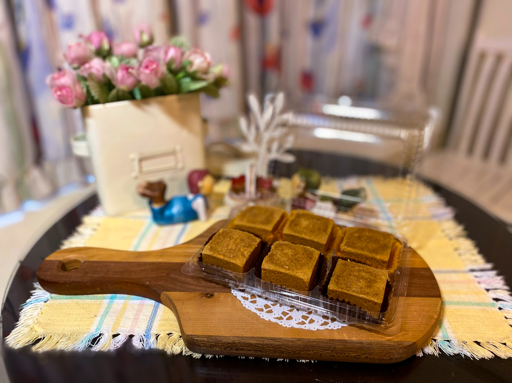
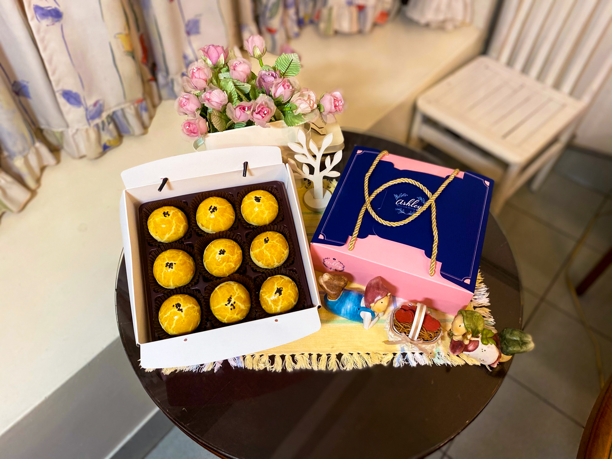

Brand Story
關於我們
關於我們
The Origin of Taste
美師傅的故事,始於對傳統風味的一份執著與熱愛。我們相信,真正的美味不只是味蕾的享受,更是一種情感的傳遞。每一個清晨,當第一縷陽光灑入工坊,麵香與奶油的交織,便是我們對您最誠摯的問候。
承襲世代相傳的手工技藝,揉合現代烘焙的精準與細膩。我們不追求量產的速度,只在乎每一顆糕點出爐時,那份能觸動人心的純粹溫度。在這裡,時間是最好的調味料。

Since
1985
1985
堅持與承諾
我們深知,優質的原料是成就經典的基石。從產地到餐桌,每一道工序都經過嚴格把關。
eco
嚴選紅豆
採用頂級萬丹紅豆,經過長時間的慢火熬煮,保留了紅豆最原始的香氣與綿密口感,甜而不膩,入口即化。
egg_alt
特級鹹蛋黃
精選在地紅土醃製的鴨蛋黃,每一顆都飽滿圓潤,色澤金黃。經過特製工法處理,去除腥味,留下醇厚的鹹香。
bakery_dining
純手工揉製
堅持傳統手工揉麵,層層疊疊的餅皮,是師傅們多年經驗的累積。每一次的折疊,都是為了呈現最酥脆的層次感。

M
Master Mei
首席烘焙師
The Master Baker
主廚簡介
「做糕點就像做人一樣,必須真材實料,用心計較每一個細節。」
美師傅 (Master Mei) 擁有超過三十年的烘焙經驗。自幼在傳統糕餅店長大的她,對於麵粉、奶油與溫度的變化有著近乎直覺的敏銳度。她將傳統中式糕點的精髓,結合法式甜點的細緻工法,創造出屬於「美師傅」獨一無二的溫潤風味。
每一顆出自她手的蛋黃酥,不僅是味覺的饗宴,更是她對這份工藝最深情的告白。她深信,只有傾注全心的作品,才能真正感動品嚐者的心。
30+
年烘焙經驗
10k+
手工製作
Meishifu